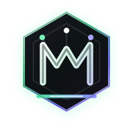

本地规则引擎的视觉系统。克制、精确、可信赖——和产品对待 agent 指令的态度一致。无渐变,无辉光,单一青铜金签名色。

上:深色底(主)。下:浅色底测试——mark 自带墨黑外壳,在浅底依然成立。隐喻:顶部 3 个散点(本地痕迹)→ 收束进 M 字标 → 沉淀为底部那条青铜规则线。
<!-- METIS:BEGIN --> + Always run npm test before + claiming a fix works. <!-- METIS:END -->
· · · · · \ | / ═══ METIS ═══ history is your config